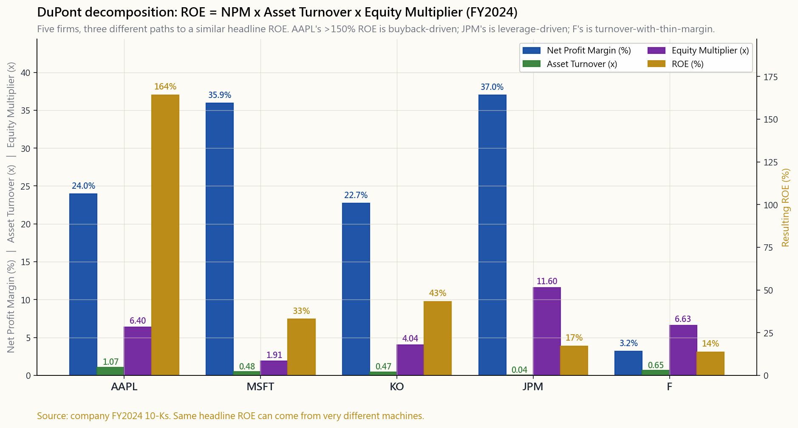
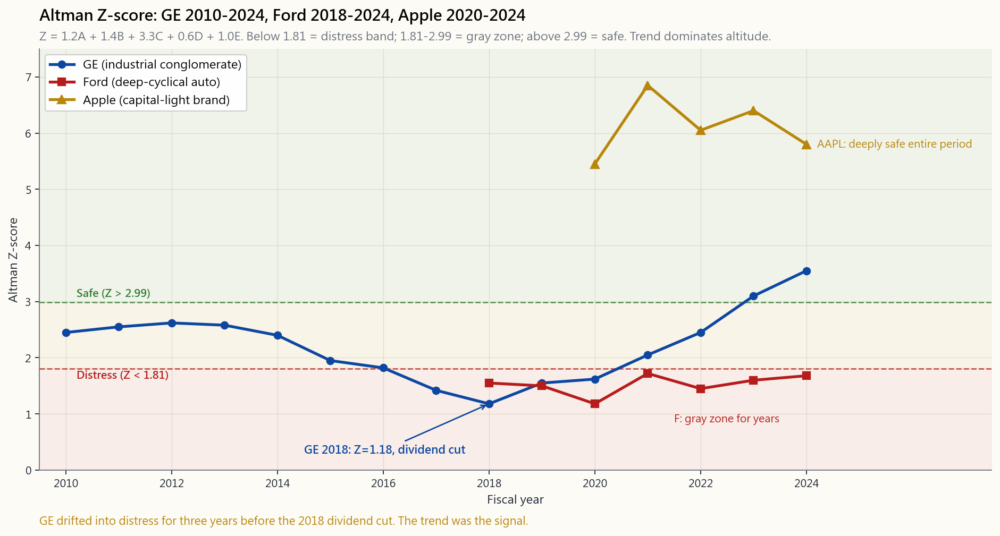

Week 35: Advanced Financial Statement Analysis — DuPont, Working Capital, and Distress Models
1. Why This Is Important
Week 8 taught you to read the three statements. Week 19 taught you the capital structure they sit on. Week 20 taught you to trust cash over earnings. Week 21 taught you to discount the cash. This week is the operator's wrench set — the small number of compact ratios and scoring models that professional analysts actually use, every quarter, for every name they cover, to answer four very practical questions:
17% ROE at JPMorgan is a fundamentally different animal from a 17% ROE at Ford. One is built on a 12× balance sheet and a 4% margin, the other on a 7× balance sheet and a 3% margin doing very different work. The DuPont decomposition splits ROE into its three (or five) drivers so you can tell margin businesses from leverage businesses from turnover businesses, and notice when one of those legs starts to wobble.
manufacturer that ships product before it gets paid, holds inventory for ninety days, and pays suppliers in thirty is bleeding cash even when the income statement looks fine. The cash conversion cycle — DSO + DIO − DPO — turns that into a single number you can track quarter to quarter and compare across competitors.
eight ratios into one probability that a firm is manipulating earnings. It will not catch every fraud (Wirecard's was a different class of lie), but Beneish flagged Enron in 1997, three years before it imploded. As an investor you do not need a perfect detector. You need something that fires often enough to make you actually open the 10-K when the score lights up.
The Altman Z-score, published by Edward Altman in 1968 and barely modified since, predicts bankruptcy risk over the next two years with roughly 80–90% accuracy on the original test set. Its threshold zones — distress below 1.81, gray 1.81–2.99, safe above 2.99 — are crude, and that is the point. Crude rules survive regimes; finely tuned ones do not. Alpha is rare, but avoiding negative alpha is cheap, and a $0 ten-line spreadsheet is one of the cheapest sources.
The chart below shows what DuPont looks like when you put five very different businesses next to each other. Apple is a margin machine with serious leverage from buybacks. JPMorgan is a leverage machine with thin margins and almost no asset turnover. Ford is a turnover machine with both thin margins and meaningful leverage. The same 13–17% ROE is being manufactured three different ways, and the path to a 0% ROE is different for each.
![Side-by-side DuPont decomposition for five very different US large-caps — Apple, Microsoft, Coca-Cola, JPMorgan, and Ford. Each firm is shown as a stacked or grouped set of bars for the three DuPont legs: net profit margin, asset turnover, and equity multiplier. Apple shows ~24% margin × 1.07 turnover × 6.4 multiplier (a margin machine with buyback-amplified leverage); Microsoft is the cleanest software profile (high margin, low turnover, low multiplier); Coca-Cola is a brand business (high margin, low turnover, moderate leverage); JPMorgan is a leverage machine (huge multiplier ~12, thin turnover); Ford is a turnover machine (3% margin × 0.65 turnover × 6.6 leverage). Same headline ROE band, three structurally different paths to it.](image/week35_dupont_compare.png)
2. What You Need to Know
2.1 DuPont Decomposition — Three-Factor and Five-Factor
The original DuPont formula, named after the analyst department at DuPont Corporation in the 1920s, is identity arithmetic:
$$ \text{ROE} \;=\; \frac{\text{Net Income}}{\text{Equity}} \;=\; \underbrace{\frac{\text{NI}}{\text{Sales}}}_{\text{Net Profit Margin}} \;\times\; \underbrace{\frac{\text{Sales}}{\text{Assets}}}_{\text{Asset Turnover}} \;\times\; \underbrace{\frac{\text{Assets}}{\text{Equity}}}_{\text{Equity Multiplier}} $$
The two middle ratios cancel algebraically. What survives is a description of how a company gets to its ROE. Margin × Turnover is operating efficiency; Equity Multiplier is leverage. A high ROE built on margin is a brand or moat business. A high ROE built on turnover is a logistics or scale business. A high ROE built on leverage is a financial business — or, when leverage rises in a non-financial, an early warning sign.
The five-factor extension splits margin into three pieces — tax burden, interest burden, and operating margin — to isolate where profitability is being squeezed:
$$ \text{ROE} \;=\; \frac{\text{NI}}{\text{EBT}} \times \frac{\text{EBT}}{\text{EBIT}} \times \frac{\text{EBIT}}{\text{Sales}} \times \frac{\text{Sales}}{\text{Assets}} \times \frac{\text{Assets}}{\text{Equity}} $$
Tax burden (NI/EBT) and interest burden (EBT/EBIT) are between zero and one. Each is a leak. The five-factor version is what you reach for when an ROE is moving and you cannot tell whether it is the operating business, the tax code, the cost of debt, the asset base, or the buyback that is doing the work. It almost always turns out to be more than one.
For Apple in FY2024 the three-factor reads roughly NPM 24% × Turnover 1.07 × Equity Multiplier 6.4 → ROE ≈ 165%. That equity multiplier is not leverage in the bad sense — it is the consequence of $725B of buybacks since 2013 (Week 19). Apple has shrunk the denominator faster than the numerator. ROE in that situation is no longer a measure of business quality; it is a measure of how aggressively the company has returned capital. Use ROIC (Week 21) for the cleaner read.
2.2 Cash Conversion Cycle and Working Capital Efficiency
The cash conversion cycle (CCC) is how many days a dollar of input spending stays trapped in the business before it comes back as a dollar of cash from a customer:
$$ \text{CCC} \;=\; \text{DSO} + \text{DIO} - \text{DPO} $$
- DSO (days sales outstanding) = Receivables / Revenue × 365.
- DIO (days inventory outstanding) = Inventory / COGS × 365.
- DPO (days payables outstanding) = Payables / COGS × 365.
A negative CCC — Apple, Costco, Amazon — means suppliers finance your inventory. You are running on float. A positive CCC means you are financing the supply chain, which is a working-capital tax that grows with revenue. Watch the trend more than the level. Three rising quarters of DSO is one of the most reliable advance warnings of a revenue-recognition problem.
A second working-capital ratio every analyst eventually internalises is the accruals ratio:
$$ \text{Accruals ratio} \;=\; \frac{\Delta\text{Working Capital} - \Delta\text{Cash}} {\text{Average Total Assets}} $$
This is the Sloan (1996) accruals anomaly in summary form (see Week 20, image/week20_accruals_anomaly.png). High positive values mean the income statement is leading the cash flow statement — the firm is booking revenue and profit faster than the cash arrives. Sloan's quintile spread averaged ~9% per year, and it has not inverted in three decades.
{kind=link}
2.3 The Beneish M-Score — Earnings Manipulation Detector
Daniel Beneish's 1999 paper combined eight one-year-change ratios into a single probit-style score. The mnemonic: DSRI, GMI, AQI, SGI, DEPI, SGAI, LVGI, TATA. You will rarely compute it by hand — your data provider does it — but the intuition matters:
| Variable | What it captures |
|---|---|
| DSRI Days Sales in Receivables Index | Receivables growing faster than sales |
| GMI Gross Margin Index | Margin deterioration year-over-year |
| AQI Asset Quality Index | Non-current non-PPE assets rising (capitalised costs) |
| SGI Sales Growth Index | Aggressive growth tempts management |
| DEPI Depreciation Index | Slowing depreciation (longer useful lives) |
| SGAI SG&A Index | SG&A rising faster than sales |
| LVGI Leverage Index | Rising leverage |
| TATA Total Accruals to Total Assets | The Sloan anomaly piece |
The composite is:
$$ M \;=\; -4.84 + 0.92 \cdot \text{DSRI} + 0.528 \cdot \text{GMI} + 0.404 \cdot \text{AQI} + 0.892 \cdot \text{SGI} + 0.115 \cdot \text{DEPI} - 0.172 \cdot \text{SGAI}
- 0.327 \cdot \text{LVGI} + 4.679 \cdot \text{TATA} $$
2.4 The Altman Z-Score — Bankruptcy Prediction
Edward Altman, NYU, 1968. Multiple discriminant analysis on 33 bankrupt and 33 non-bankrupt manufacturers. The original public-firm formula:
$$ Z \;=\; 1.2 \, A + 1.4 \, B + 3.3 \, C + 0.6 \, D + 1.0 \, E $$
| Term | Definition | Interpretation |
|---|---|---|
| A | Working capital / Total assets | Short-term liquidity buffer |
| B | Retained earnings / Total assets | Cumulative profitability |
| C | EBIT / Total assets | Operating productivity of assets |
| D | Market value of equity / Total liabilities | Market-tested solvency cushion |
| E | Sales / Total assets | Asset turnover |
The cutoffs:
- Z > 2.99 — "safe" zone. Bankruptcy in next 2 years rare.
- 1.81 ≤ Z ≤ 2.99 — gray zone. Watch list.
- Z < 1.81 — distress zone. Materially elevated bankruptcy
Two warnings. First, Altman calibrated the model on US manufacturers with public equity. The variants — Z' for private firms, Z'' for non-manufacturers and emerging markets — change the coefficients and cutoffs. Use the right one. Second, Z is a noisy point estimate; the trend matters more than any single reading. GE's Z drifted from 2.6 in 2012 down to 1.2 by 2018, three years before the dividend cut and the breakup. The trend line was the signal; the absolute level was just the noise.
The chart below shows three trajectories. GE 2010-2024 (the deteriorate-and-recover curve), Ford 2018-2024 (perpetually parked in the gray zone, which is about right for a cyclical), and Apple 2020-2024 (deeply safe, the shape of a brand business with a clean balance sheet). Same model, same cutoffs, completely different stories.
![Time-series chart of the Altman Z-score for three US large-caps — GE, Ford, and Apple — across roughly 2010–2024. The y-axis shows Z; horizontal bands at Z=1.81 and Z=2.99 mark the distress / gray / safe zones. GE traces a deteriorate-and-recover curve: starts in the gray zone around 2.5 in 2010, drifts up briefly, then slides through gray into distress (below 1.3) by 2018 — the dividend-cut and writedown year — before partially recovering. Ford is parked in the gray zone (Z ~1.5–1.7) the entire stretch, the home address for a deep-cyclical manufacturer. Apple sits well above 5 throughout, deeply safe — fortress balance sheet, brand business. Same model, same cutoffs, three completely different stories.](image/week35_zscore_distress.png)
2.5 Putting It Together — The Two-Page Health Check
In practice, here is what a compact diligence sheet looks like for a new name:
of the legs trending in a direction the management story does not explain?
level. Compare to two named competitors.
reading is a yellow flag.
flag. Above −1.0 is a red flag.
years is a position-size question. Trending down through the gray zone is a research question.
None of this is alpha generation in the new-edge sense. It is the opposite: it is the negative-alpha filter. Most amateur portfolios underperform not because they failed to find the next Apple but because they held a Bear Stearns or a Valeant or a GE in the 2017 stretch when a five-minute screen would have asked them to think twice. The interactive lab at the end of this lesson lets you pick a preset firm or punch in your own numbers and watch the Z-score band classification flip in real time.
**Horace's view — this work is defensive, not offensive, and the textbook quietly misframes it.** The orthodox CFA framing puts DCF, quality screens, and the Z-score on the alpha-generation side of the ledger — as if a careful analyst, armed with these tools and a clean spreadsheet, can systematically pick winners that the rest of the market has missed. My own experience says that is the wrong way to read this material. The market is right far more often than I am. Genuine, articulable mispricings — the rare moments where I can point to exactly where the crowd has it wrong and why — are not what DCF produces; DCF produces a fair-value range that mostly agrees, within a wide band, with where the stock already trades. The honest read is that this entire toolkit is *negative-alpha filtering*: it stops you being on the wrong side of an asymmetric mispricing that the rest of the market has already priced in.
That reframing changes how you spend your time. If you treat financial-statement work as alpha generation, you grind harder on the marginal name, looking for an edge that probably isn't there and overtrading when you talk yourself into one. If you treat it as the negative-alpha filter — as the screen that decides which names never enter the portfolio in the first place — you spend the same hours much more productively. The real edges in this course are elsewhere: macro, sector rotation, structural flow mispricings, the occasional tax or instrument-structure advantage. The bottom-up toolkit is what keeps you from owning the next Valeant, not what finds you the next Apple. Worth doing carefully. Not worth mistaking for the source of returns.
3. Common Misconceptions
equity multiplier is leverage in disguise. Decompose it before you admire it.
arithmetic, but the change in each factor is information. A margin compressing while turnover and leverage hold steady tells you exactly which line of the income statement to investigate.
consequence of supplier power and customer payment terms. You cannot will it into existence; chasing it through aggressive payable- stretching can break supplier relationships and collapses in recessions.
footprint of accounting manipulation — receivables and accruals and margin changes. Frauds that bypass the books entirely (fake cash balance, fake invoices, related-party transactions) leave no M-score footprint.
probability* of bankruptcy in the next two years, not certainty. Plenty of firms live in the distress zone for years and emerge. Plenty of firms in the gray zone go to zero. Use it as a sizing and research signal, not an exit signal in isolation.
not. Banks have a balance sheet that is mostly financial assets; asset turnover is meaningless and Z-score variants are required. Use ROTCE and tangible book trends instead.
EDGAR account, which is free, and a calculator. Every ratio in this lesson can be computed from a 10-K in under thirty minutes.
safe."** They are necessary, not sufficient. Wirecard was fine on both. So was Bernie Madoff's "fund". The models score *what is in the books*. They do not audit whether the books are real.
4. Q&A Section
Q: Should I use three-factor DuPont or five-factor? A: Start with three-factor for screening across many names. Move to five-factor when one of the three is moving and you need to know which of tax, interest, or operating margin is doing the work. Five-factor is also essential for cross-country comparisons because tax burdens diverge sharply across jurisdictions.
Q: How often should I recompute these ratios? A: Each fiscal quarter when the 10-Q drops, plus a clean run through the 10-K every January. Working capital ratios in particular are volatile quarter-to-quarter; trend over 4-8 quarters matters far more than a single point.
Q: What is the typical M-score for a clean blue-chip? A: For mature, slow-growing US large-caps the M-score sits around −2.5 to −3.0. Apple, Microsoft, Coca-Cola, JPMorgan all run comfortably below the −1.78 threshold. Aggressive-growth names routinely score between −2.0 and −1.5 simply because the SGI (sales growth index) is elevated; that is a feature of the model, not necessarily a manipulation signal.
Q: Which of the four models is most useful? A: Honestly, the cash conversion cycle. It is the most robust to reporting style, easiest to compute, hardest to fake without leaving a trail elsewhere, and most directly tied to the operating reality. The M-score and Z-score are scoring composites; CCC is a measurement of an actual physical fact about the business.
Q: Can I use the Z-score for an ETF or a fund? A: No. Z-score requires a single corporate balance sheet. For a fund or ETF you would aggregate the holdings — Bloomberg and similar tools report a weighted-average Z-score for index ETFs, but the interpretation is loose. The model was designed for single-firm distress prediction, not portfolio risk.
Q: What is the right benchmark for DSO and DIO? A: The named competitor in the 10-K's own competitive section, plus the industry median. Direction matters more than level. A retailer with DIO of 90 and a competitor at 60 should worry; a retailer whose own DIO went from 60 to 90 over four quarters should worry more.
Q: Why does AAPL's equity multiplier look so extreme? A: Buybacks. Apple has retired roughly $725B of equity since 2013 (see Week 19 chart). The denominator of ROE has shrunk faster than the numerator. The "ROE" reading north of 150% is real arithmetic but not a meaningful measure of business quality at this point. Use ROIC or return on tangible assets instead.
**Q: Does the M-score still work after 25 years of academic publication?** A: Less well than at publication, but it has not collapsed. The mechanical relationships it captures — receivables growing faster than sales, gross margin deteriorating, accruals running positive — remain the actual physical signatures of earnings management. Public disclosure of the formula has raised the cost of crude manipulation, which is itself a form of efficacy.
Q: How does this fit into Horace's four-tranche framework? A: Mostly Tranche 2 (factor / quality sleeve) and Tranche 3 (active / single-name alpha). Tranche 1 (passive index) does not need any of this; you bought the basket. Tranche 4 (cash and dry powder) does not need any of this either. The middle two tranches are where the "look at cash, look at quality" alpha sources live, and these are the ratios that operationalise that look.
Q: I have a stock with a low Z-score. Should I sell? A: Not on the basis of the score alone. First check the trend (is it deteriorating, stabilising, or recovering?). Second check whether the company is being correctly classified — banks, REITs, insurance, and asset-light tech do not behave like 1968 manufacturers. Third look at the bond market: if credit spreads on the company's debt are not widening, the bond market does not believe the equity model. The combination of a deteriorating Z trend and widening credit spreads is the actionable signal, not either alone.
Q: Can these ratios be gamed by management? A: Yes, all of them, partially. Working capital can be window-dressed at quarter-end (factoring receivables, paying suppliers slowly). Margins can be smoothed by changing inventory accounting. Even bankruptcy probability can be lowered for a quarter by a debt-for- equity swap that drives up book equity. The defence is the trend, not the point. A company that consistently games one ratio will eventually break another.
第三十五週：進階財務報表分析——杜邦分析、營運資金及財務困境模型
1. 為何此主題至關重要
第8週教你閱讀三張財務報表。第19週教你理解其背後的資本結構。第20週教你信任現金流多於盈利。第21週教你折現現金流。本週是操盤者的工具箱——專業分析師每個季度、針對每一隻股票，實際使用的少數精簡比率與評分模型，用以回答四個非常實際的問題：
下方圖表展示了將五家性質迥異的企業並排比較時，杜邦分析所呈現的面貌。蘋果是利潤率機器，憑藉股份回購獲得顯著槓桿效應。摩根大通是槓桿機器，利潤率極薄，資產周轉率幾近於零。福特是周轉率機器，利潤率薄且槓桿不低。相同的13至17%股本回報率，卻以三種截然不同的方式製造出來，而每家公司走向0%股本回報率的路徑，也各有不同。

2. 你需要掌握的知識
2.1 杜邦分解——三因素與五因素
最初的杜邦公式，以1920年代杜邦公司分析部門命名，是一個恆等式的數學運算：
$$ \text{股本回報率} \;=\; \frac{\text{純利}}{\text{股東權益}} \;=\; \underbrace{\frac{\text{純利}}{\text{銷售額}}}_{\text{淨利潤率}} \;\times\; \underbrace{\frac{\text{銷售額}}{\text{資產}}}_{\text{資產周轉率}} \;\times\; \underbrace{\frac{\text{資產}}{\text{股東權益}}}_{\text{權益乘數}} $$
中間兩個比率在代數上相互抵消。留存下來的，是對一家公司如何達致其股本回報率的描述。利潤率乘以周轉率是營運效率；權益乘數是槓桿。高股本回報率建立在利潤率之上，代表品牌或護城河業務；建立在周轉率之上，代表物流或規模業務；建立在槓桿之上，代表金融業務——或者，當非金融業務的槓桿上升時，則是一個早期預警信號。
五因素擴展版將利潤率進一步拆分為三個部分——稅務負擔、利息負擔與經營利潤率——以隔離盈利能力在何處受到擠壓：
$$ \text{股本回報率} \;=\; \frac{\text{純利}}{\text{稅前盈利}} \times \frac{\text{稅前盈利}}{\text{息稅前盈利}} \times \frac{\text{息稅前盈利}}{\text{銷售額}} \times \frac{\text{銷售額}}{\text{資產}} \times \frac{\text{資產}}{\text{股東權益}} $$
稅務負擔（純利/稅前盈利）與利息負擔（稅前盈利/息稅前盈利）均介於零與一之間，各是一個漏損。當股本回報率正在變動而你無法判斷是經營業務、稅制、債務成本、資產基礎，還是股份回購在起作用時，五因素版本便是你該使用的工具。答案幾乎總是不止一個因素。
以蘋果2024財年為例，三因素讀數大致為：淨利潤率24%×資產周轉率1.07×權益乘數6.4→股本回報率約165%。這個權益乘數並非惡意槓桿——它是自2013年以來7,250億美元股份回購的結果（第19週）。蘋果縮減分母的速度快於縮減分子。在此情況下，股本回報率已不再是衡量業務質素的指標；它衡量的是公司積極回購資本的力度。如需更清晰的讀數，請使用投入資本回報率（第21週）。
2.2 現金轉換週期與營運資金效率
現金轉換週期（CCC）是一美元的投入支出在業務中被困多少天，才能以客戶現金的形式回流：
$$ \text{現金轉換週期} \;=\; \text{應收帳款週轉天數} + \text{存貨周轉天數} - \text{應付帳款周轉天數} $$
- 應收帳款週轉天數 = 應收帳款 / 收入 × 365。客戶需要多長時間才付款給你。
- 存貨周轉天數 = 存貨 / 銷售成本 × 365。產品在售出前擱置多長時間。
- 應付帳款周轉天數 = 應付帳款 / 銷售成本 × 365。你需要多長時間才付款給供應商。
每位分析師最終都會內化的第二個營運資金比率，是應計項目比率：
$$ \text{應計項目比率} \;=\; \frac{\Delta\text{營運資金} - \Delta\text{現金}} {\text{平均總資產}} $$
這是Sloan（1996）應計項目異象的概括形式（見第20週，image/week20_accruals_anomaly.png）。高正值意味著損益表領先於現金流量表——公司確認收入和盈利的速度快於現金到達的速度。Sloan的五分位差距平均每年約9%，三十年來從未逆轉。
2.3 Beneish M評分——盈利操控探測器
Daniel Beneish於1999年的論文將八個單年度變化比率合併為一個類概率得分。助記法：DSRI、GMI、AQI、SGI、DEPI、SGAI、LVGI、TATA。你很少需要手動計算——你的數據提供商會代勞——但直覺至關重要：
| 變量 | 所捕捉的信號 |
|---|---|
| DSRI 應收帳款天數指數 | 應收帳款增速快於銷售增速 |
| GMI 毛利率指數 | 毛利率逐年惡化 |
| AQI 資產質素指數 | 非流動非固定資產上升（資本化成本） |
| SGI 銷售增長指數 | 激進增長誘使管理層平滑業績 |
| DEPI 折舊指數 | 折舊放緩（延長使用年限） |
| SGAI 銷售及行政費用指數 | 銷售及行政費用增速快於銷售增速 |
| LVGI 槓桿指數 | 槓桿上升 |
| TATA 總應計項目佔總資產比 | Sloan異象的應計項目部分 |
綜合評分公式為：
$$ M \;=\; -4.84 + 0.92 \cdot \text{DSRI} + 0.528 \cdot \text{GMI} + 0.404 \cdot \text{AQI} + 0.892 \cdot \text{SGI} + 0.115 \cdot \text{DEPI} - 0.172 \cdot \text{SGAI}
- 0.327 \cdot \text{LVGI} + 4.679 \cdot \text{TATA} $$
2.4 奧特曼Z評分——破產預測
紐約大學愛德華·奧特曼，1968年。針對33家破產與33家非破產製造商進行多元判別分析。適用於上市公司的原始公式：
$$ Z \;=\; 1.2 \, A + 1.4 \, B + 3.3 \, C + 0.6 \, D + 1.0 \, E $$
| 項目 | 定義 | 解讀 |
|---|---|---|
| A | 營運資金 / 總資產 | 短期流動性緩衝 |
| B | 留存盈利 / 總資產 | 累計盈利能力 |
| C | 息稅前盈利 / 總資產 | 資產的經營生產力 |
| D | 股票市值 / 總負債 | 經市場驗證的償付能力緩衝 |
| E | 銷售額 / 總資產 | 資產周轉率 |
臨界值如下：
- Z > 2.99 — 「安全」區。未來兩年內破產屬罕見。
- 1.81 ≤ Z ≤ 2.99 — 灰色區。列入觀察名單。
- Z < 1.81 — 困境區。破產概率顯著上升。
下方圖表呈現三條走勢曲線：通用電氣2010至2024年（惡化後復甦的曲線）、福特2018至2024年（長期停留在灰色區，對一家週期性企業而言大致貼切），以及蘋果2020至2024年（深處安全區，品牌業務配以乾淨資產負債表的典型形態）。同一模型，同一臨界值，卻講述了三個截然不同的故事。

2.5 融會貫通——兩頁健康檢查清單
在實際操作中，對一個新持倉進行初步盡職調查的精簡清單如下：
這一切都不是傳統意義上的阿爾法生成。它的本質恰恰相反：它是負阿爾法過濾器。大多數業餘投資組合跑輸大市，並非因為未能找到下一個蘋果，而是因為他們持有了貝爾斯登、Valeant或2017年前後的通用電氣——而只需五分鐘的篩選，便足以讓他們停下來三思。本週課程末尾的互動實驗室，讓你選擇預設公司或輸入自己的數字，實時觀察Z評分區間分類的變化。
陳馬的觀點——這項工作本質上是防禦性的，而非進攻性的，而教科書悄悄地誤導了我們的理解框架。 正統的CFA框架將現金流折現法、質素篩選與Z評分置於阿爾法生成的一側——彷彿一位細心的分析師，手持這些工具與一張乾淨的試算表，便能系統性地挑出其他市場參與者所遺漏的贏家。以我個人的經驗，這種解讀方式是錯誤的。市場對的次數，遠多於我對的次數。真正清晰可表述的錯誤定價——那些我能夠指出群眾究竟在哪裡錯了、以及為何如此的罕見時刻——並非現金流折現法所能產生的；現金流折現法所產生的，是一個大致與股票現價重疊（在一個寬泛區間內）的公允價值範圍。誠實的解讀是：整套工具箱都是負阿爾法過濾——它阻止你站在一個其餘市場參與者已經定價在內的不對稱錯誤定價的錯誤一方。
這種重新定位改變了你分配時間的方式。如果你把財務報表分析工作視為阿爾法生成，你會在邊際標的上更費力氣，尋找一個很可能根本不存在的優勢，並在說服自己找到了優勢時過度交易。如果你把它視為負阿爾法過濾器——作為決定哪些標的從不進入投資組合的篩選器——你就能以同樣的時間做更有意義的事。本課程的真正優勢在別處：宏觀分析、板塊輪動、結構性資金流錯誤定價，以及偶爾出現的稅務或工具結構優勢。自下而上的工具箱，是讓你避免持有下一個Valeant的防線，而非幫你找到下一個蘋果的指南針。值得認真對待，但不值得誤以為是回報的來源。
3. 常見誤解
4. 問答環節
問：我應該使用三因素杜邦還是五因素杜邦？ 答：在對多個標的進行篩選時，從三因素開始。當其中一個因素正在移動而你需要判斷是稅務、利息，還是經營利潤率在起作用時，再使用五因素版本。五因素對於跨國比較也必不可少，因為各司法管轄區的稅務負擔存在顯著差異。
問：我應該多久重新計算一次這些比率？ 答：每個季度當10-Q季報發布時計算一次，並於每年一月對10-K年報進行一次完整覆核。營運資金比率季度間波動較大；過去4至8個季度的趨勢，遠比任何單一數據點更重要。
問：一家乾淨的藍籌股，M評分的典型範圍是多少？ 答：對於成熟、增長緩慢的美國大型股，M評分通常在−2.5至−3.0之間。蘋果、微軟、可口可樂、摩根大通均輕鬆低於−1.78的門檻。激進增長型標的通常評分在−2.0至−1.5之間，僅僅因為銷售增長指數（SGI）偏高；這是模型的特性，不一定是操控信號。
問：四個模型中，哪個最有用？ 答：坦白說，是現金轉換週期。它對報告風格最為穩健，最容易計算，最難在不於其他地方留下痕跡的情況下造假，且與業務的實際運營現實最為直接相關。M評分和Z評分是綜合評分；現金轉換週期是對業務實際情況的量度。
問：我可以對交易所買賣基金或互惠基金使用Z評分嗎？ 答：不行。Z評分需要單一企業的資產負債表。對於基金或交易所買賣基金，你需要匯總持倉——Bloomberg等工具會報告指數交易所買賣基金的加權平均Z評分，但解讀較為寬泛。該模型是為單一企業的財務困境預測而設計的，並非用於投資組合風險。
問：應收帳款週轉天數和存貨周轉天數的正確基準是什麼？ 答：10-K年報競爭章節中點名的競爭對手，以及行業中位數。方向比水平更重要。一家零售商存貨周轉天數90天而競爭對手為60天應當警惕；一家零售商自身存貨周轉天數在四個季度內從60天增至90天，則應更加警惕。
問：為何蘋果的權益乘數看起來如此極端？ 答：股份回購所致。蘋果自2013年以來已回購約7,250億美元的股份（見第19週圖表）。股本回報率分母的縮減速度快於分子。股本回報率逾150%的讀數是真實的算術結果，但在這種情況下，它並非衡量業務質素的有意義指標。請改用投入資本回報率或有形資產回報率。
問：M評分在發表25年後是否仍然有效？ 答：有效性較發表之初有所下降，但並未崩潰。它所捕捉的機械關係——應收帳款增速快於銷售增速、毛利率惡化、應計項目持續正值——依然是盈利操控的實際物理痕跡。公式的公開披露提高了粗糙操控的成本，這本身就是一種有效性的體現。
問：這與陳馬的四組別框架如何銜接？ 答：主要與第二組別（因子/質素倉）和第三組別（主動管理/個股阿爾法）相關。第一組別（被動指數）不需要這些；你已買入一籃子股票。第四組別（現金及備用彈藥）也不需要。中間兩個組別是「關注現金、關注質素」的阿爾法來源所在，而這些正是使這種關注具體化的比率。
問：我持有一隻Z評分偏低的股票。我應該賣出嗎？ 答：不應單憑評分便作此決定。首先檢查趨勢（是持續惡化、趨於穩定，還是正在復甦？）。其次核實公司是否被正確分類——銀行、房地產信託基金、保險及輕資產科技股，其行為與1968年的製造商並不相同。第三，觀察債券市場：若該公司債務的信用利差並未擴大，則債券市場不認同股票模型的判斷。Z評分趨勢惡化與信用利差同步擴大的組合，才是可採取行動的信號，而非兩者之一單獨出現。
問：管理層可以對這些比率進行美化嗎？ 答：可以，均可部分美化。營運資金可在季末進行橱窗粉飾（應收帳款保理、拖延付款給供應商）。利潤率可通過更改存貨會計方法加以平滑。即使破產概率也可通過債轉股交易提升帳面股東權益而在一個季度內暫時降低。防禦之道在於趨勢，而非單點數據。一家持續美化某一比率的公司，最終必然會在另一個比率上露出馬腳。
第三十五週：進階財務報表分析——杜邦分析、營運資金與財務困境模型
1. 為什麼這很重要
第8週教你讀三大財務報表。第19週教你理解其背後的資本結構。第20週教你信任現金流而非盈餘。第21週教你折現現金流。本週是操盤手的工具組——少數幾個精簡的比率與評分模型，是專業分析師每季、針對每一檔追蹤標的，實際拿出來用的工具，用來回答四個非常實際的問題：
下方圖表展示當你將五家截然不同的企業並排比較時，杜邦分析的樣貌。蘋果是利潤率機器，搭配庫藏股回購帶來的顯著槓桿。摩根大通是槓桿機器，利潤率薄、資產周轉率幾乎可忽略。福特是周轉率機器，利潤率薄且槓桿可觀。同樣13至17%的股東權益報酬率，是以三種截然不同的方式製造出來的，而各自走向0%股東權益報酬率的路徑也大相逕庭。
2. 你需要知道的內容
2.1 杜邦分解——三因子與五因子
原始的杜邦公式，以1920年代杜邦公司分析部門命名，是一個恆等式算術：
$$ \text{股東權益報酬率} \;=\; \frac{\text{淨利}}{\text{股東權益}} \;=\; \underbrace{\frac{\text{淨利}}{\text{營收}}}_{\text{淨利潤率}} \;\times\; \underbrace{\frac{\text{營收}}{\text{資產}}}_{\text{資產周轉率}} \;\times\; \underbrace{\frac{\text{資產}}{\text{股東權益}}}_{\text{股東權益乘數}} $$
中間兩個比率在代數上互相抵消。留存下來的是一份描述，說明公司如何達到其股東權益報酬率。利潤率乘以周轉率是營運效率；股東權益乘數是槓桿。建立在利潤率上的高股東權益報酬率，是品牌或護城河型企業。建立在周轉率上的高股東權益報酬率，是物流或規模型企業。建立在槓桿上的高股東權益報酬率，是金融型企業——或者，當非金融型企業的槓桿攀升時，是一個早期預警訊號。
五因子擴展版將利潤率拆為三個部分——稅務負擔、利息負擔與營業利潤率——以便精確定位獲利在哪裡受到擠壓：
$$ \text{股東權益報酬率} \;=\; \frac{\text{淨利}}{\text{稅前利潤}} \times \frac{\text{稅前利潤}}{\text{息前稅前利潤}} \times \frac{\text{息前稅前利潤}}{\text{營收}} \times \frac{\text{營收}}{\text{資產}} \times \frac{\text{資產}}{\text{股東權益}} $$
稅務負擔（淨利/稅前利潤）與利息負擔（稅前利潤/息前稅前利潤）介於零與一之間，各自代表一種漏損。當股東權益報酬率出現變動卻看不出是稅務、利息成本、資產基礎還是庫藏股回購在作用時，就是使用五因子版本的時機。結果幾乎總是不只一個因素在動。
以蘋果2024財年的三因子為例，粗略讀取為：淨利潤率24%×資產周轉率1.07×股東權益乘數6.4，股東權益報酬率約165%。那個股東權益乘數不是壞的那種槓桿——它是自2013年以來累計7,250億美元庫藏股回購（第19週）的結果。蘋果壓縮分母的速度快過分子。在這種情況下，股東權益報酬率已不再是衡量企業品質的指標；它衡量的是公司回購資本的積極程度。要獲得更乾淨的讀數，請使用投入資本報酬率（第21週）。
2.2 現金轉換週期與營運資金效率
現金轉換週期（CCC）是一塊投入的支出，在企業內部被套牢多少天，才能以客戶現金的形式回籠：
$$ \text{現金轉換週期} \;=\; \text{應收帳款天數} + \text{存貨天數} - \text{應付帳款天數} $$
- 應收帳款天數（DSO）：應收帳款 ÷ 營收 × 365。客戶付款所需的時間。
- 存貨天數（DIO）：存貨 ÷ 銷貨成本 × 365。產品售出前的積壓時間。
- 應付帳款天數（DPO）：應付帳款 ÷ 銷貨成本 × 365。你支付供應商所需的時間。
每位分析師最終都會內化的第二個營運資金比率是應計項目比率：
$$ \text{應計項目比率} \;=\; \frac{\Delta\text{營運資金} - \Delta\text{現金}} {\text{平均總資產}} $$
這是Sloan（1996年）應計項目異常的摘要形式（見第20週，image/week20_accruals_anomaly.png）。高正值意味著損益表領先現金流量表——公司認列營收與利潤的速度快過現金到位的速度。Sloan的五分位數價差平均每年約9%，三十年來從未反轉。
2.3 Beneish M分數——盈餘操縱偵測器
Daniel Beneish在1999年的論文中，將八個年度變化比率合成為單一的probit型分數。記憶口訣：DSRI、GMI、AQI、SGI、DEPI、SGAI、LVGI、TATA。你鮮少需要手工計算——資料供應商會幫你算——但理解其背後邏輯至關重要：
| 變數 | 捕捉的意涵 |
|---|---|
| DSRI 應收帳款天數指數 | 應收帳款成長速度快於營收 |
| GMI 毛利率指數 | 毛利率較前年惡化 |
| AQI 資產品質指數 | 非流動、非不動產廠房設備資產上升（資本化費用） |
| SGI 營收成長指數 | 激進成長誘使管理層美化數字 |
| DEPI 折舊指數 | 折舊放緩（延長耐用年限） |
| SGAI 銷管費用指數 | 銷管費用成長速度快於營收 |
| LVGI 槓桿指數 | 槓桿上升趨勢 |
| TATA 總應計項目佔總資產比 | Sloan異常的部分 |
合成公式為：
$$ M \;=\; -4.84 + 0.92 \cdot \text{DSRI} + 0.528 \cdot \text{GMI} + 0.404 \cdot \text{AQI} + 0.892 \cdot \text{SGI} + 0.115 \cdot \text{DEPI} - 0.172 \cdot \text{SGAI}
- 0.327 \cdot \text{LVGI} + 4.679 \cdot \text{TATA} $$
2.4 Altman Z分數——破產預測
紐約大學愛德華·奧特曼，1968年。以33家破產與33家未破產製造商為樣本進行多元判別分析。原始上市公司公式：
$$ Z \;=\; 1.2 \, A + 1.4 \, B + 3.3 \, C + 0.6 \, D + 1.0 \, E $$
| 項目 | 定義 | 詮釋 |
|---|---|---|
| A | 營運資金 ÷ 總資產 | 短期流動性緩衝 |
| B | 保留盈餘 ÷ 總資產 | 累積獲利能力 |
| C | 息前稅前利潤 ÷ 總資產 | 資產的營運生產力 |
| D | 股票市值 ÷ 總負債 | 市場驗證的償債緩衝 |
| E | 營收 ÷ 總資產 | 資產周轉率 |
分區門檻：
- Z > 2.99 — 「安全」區。未來兩年內破產機率低。
- 1.81 ≤ Z ≤ 2.99 — 灰色區。列入觀察名單。
- Z < 1.81 — 困境區。破產機率顯著偏高。
下方圖表呈現三條軌跡：奇異電氣2010至2024年（惡化後復甦的曲線）、福特2018至2024年（長期停在灰色區，對一家景氣循環企業而言確實如此）、以及蘋果2020至2024年（深度安全，品牌企業搭配乾淨資產負債表的形狀）。相同模型、相同門檻，三個截然不同的故事。
2.5 綜合應用——兩頁式財務健診
實務上，針對一個新標的，精簡的盡職調查表如下所示：
這些都不是新型意義上的阿爾法產生。恰恰相反：這是負阿爾法過濾器。大多數業餘投資組合的表現落後，並非因為未能找到下一個蘋果，而是因為在一個五分鐘的篩選就能讓他們再三思量的時刻，仍然持有了貝爾斯登、Valeant，或2017年段的奇異電氣。本課程最後的互動實驗室讓你選擇預設公司或輸入自己的數字，即時觀看Z分數的帶狀分類翻轉。
陳馬的觀點——這項工作是防禦性的，而非攻擊性的，教科書悄悄地錯置了它的框架。 正統的CFA框架將現金流量折現法、品質篩選與Z分數放在阿爾法產生的那一側——彷彿一位謹慎的分析師，手持這些工具與一張乾淨的試算表，就能系統性地挑出其他市場參與者遺漏的贏家。以我自己的經歷來看，這是讀錯了這些材料的方式。市場正確的頻率遠高於我。真正清晰可言的錯誤定價——那些我能精確指出哪裡出錯、為何出錯的罕見時刻——並非現金流量折現法所產生的；現金流量折現法產生的是公允價值區間，而這個區間在寬廣的帶狀範圍內，大多與股票現有交易價格吻合。誠實的理解是：這整套工具組是負阿爾法過濾——它阻止你站在其餘市場早已定價的非對稱錯誤定價的錯誤那一側。
這個框架的轉換，改變了你分配時間的方式。如果你把財務報表工作視為阿爾法產生，你會在邊際標的上愈磨愈深，追逐一個可能根本不存在的優勢，並在說服自己找到了優勢時過度交易。如果你把它視為負阿爾法過濾器——作為決定哪些標的永遠不進入投資組合的篩選機制——你用相同的時間能做更有生產力的事。本課程中真正的優勢在別處：總體經濟、類股輪動、結構性資金流錯置，以及偶爾出現的稅務或工具結構優勢。由下而上的工具組讓你不持有下一個Valeant，而非讓你找到下一個蘋果。值得認真對待。不值得誤認為是報酬的來源。
3. 常見誤解
4. 問答區
問：我應該使用三因子杜邦還是五因子杜邦？ 答：篩選大量標的時，從三因子開始。當其中一個因子出現變動，而你需要知道是稅務、利息還是營業利潤率在作用時，改用五因子。五因子版本在跨國比較時也不可或缺，因為各司法管轄區的稅務負擔差異顯著。
問：我應該多久重新計算一次這些比率？ 答：每次10-Q季報公布時計算一次，每年一月仔細跑過一次10-K年報。營運資金比率季度間波動尤大；4至8季的趨勢遠比單一時間點重要。
問：乾淨的藍籌股，M分數的典型值是多少？ 答：對於成熟、緩慢成長的美國大型股，M分數大約落在−2.5至−3.0。蘋果、微軟、可口可樂、摩根大通都舒適地低於−1.78門檻。積極成長型公司的分數經常介於−2.0至−1.5之間，單純因為SGI（營收成長指數）偏高；這是模型的特性，未必是操縱訊號。
問：這四個模型哪個最有用？ 答：老實說，是現金轉換週期。它對申報方式最為穩健，最容易計算，最難在不留下其他痕跡的情況下被造假，也與企業的實際營運現實最直接相連。M分數和Z分數是合成評分；現金轉換週期是對企業真實物理事實的衡量。
問：我可以對指數股票型基金或共同基金使用Z分數嗎？ 答：不行。Z分數需要單一公司的資產負債表。對基金或指數股票型基金，你需要彙整持股數據——Bloomberg等工具會報告指數股票型基金的加權平均Z分數，但詮釋較為寬鬆。該模型是為單一公司的財務困境預測而設計，並非投資組合風險。
問：應收帳款天數和存貨天數的正確基準是什麼？ 答：10-K競爭章節中具名的競爭對手，加上產業中位數。方向遠比數值重要。存貨天數90天、競爭對手60天的零售商應該擔心；自身存貨天數從60天在四季內升至90天的零售商更應該擔心。
問：為什麼蘋果的股東權益乘數看起來這麼極端？ 答：庫藏股回購。蘋果自2013年以來已回購約7,250億美元的股份（見第19週圖表）。股東權益報酬率分母的縮減速度快過分子。股東權益報酬率超過150%是真實的算術，但在這個時點已不是衡量企業品質的有意義指標。請改用投入資本報酬率或有形資產報酬率。
問：M分數在學術界公開發表25年後是否仍然有效？ 答：效力不如發表當時，但尚未崩潰。它所捕捉的機械性關係——應收帳款成長速度快於營收、毛利率惡化、應計項目持續為正——依然是盈餘管理的實際物理特徵。公式的公開揭露已提高了粗糙操縱的成本，而這本身就是一種效力的體現。
問：這如何融入陳馬的四分倉框架？ 答：主要是第二分倉（因子/品質部位）與第三分倉（主動式/個股阿爾法）。第一分倉（被動式指數）不需要任何這些；你買的是一籃子。第四分倉（現金與乾火藥）也不需要。中間兩個分倉是「看現金、看品質」的阿爾法來源所在，而這些比率就是將那種審視落實為操作的工具。
問：我有一檔Z分數很低的股票，我應該賣出嗎？ 答：不應該單憑分數本身就賣出。首先檢視趨勢（正在惡化、趨穩，還是回升？）。其次確認公司是否被正確分類——銀行、不動產投資信託、保險公司與輕資產科技公司，其表現與1968年的製造商不同。第三看債市：如果公司債的信用利差沒有走闊，債市並不認同股票模型的判斷。Z分數趨勢惡化加上信用利差走闊，才是可採取行動的訊號，而非任一者單獨出現。
問：管理層可以操弄這些比率嗎？ 答：可以，所有比率都可以，但程度有限。營運資金可以在季末窗飾（應收帳款保理、刻意放慢付款）。利潤率可以透過更改存貨會計方法來平滑。就連破產機率都可以透過債轉股來短暫拉高帳面股東權益、壓低數值。防禦之道在於趨勢，而非時間點。長期刻意操弄某個比率的公司，最終必然會打破另一個比率。
第三十五周：高级财务报表分析——杜邦分解、营运资本与财务困境模型
1. 为什么这很重要
第8周教你读懂三张财务报表。第19周教你理解其背后的资本结构。第20周教你信任现金流而非盈利。第21周教你对现金流进行折现。本周是操盘手的工具箱——少数几个简洁的比率和评分模型，是专业分析师每季度、针对每只覆盖标的实际使用的工具，用来回答四个非常实际的问题：
下方图表展示了将五家截然不同的企业并排进行杜邦分解后的样貌。苹果是一部利润率机器，辅以股票回购带来的强劲杠杆效应。摩根大通是一部杠杆机器，利润率极薄，资产周转率几近于无。福特是一部周转率机器，利润率极薄且杠杆显著。同样是13%至17%的净资产收益率，却是由三种截然不同的方式制造出来的；而各自迈向净资产收益率归零的路径，也因此大相径庭。
2. 你需要掌握的内容
2.1 杜邦分解——三因子与五因子
最初的杜邦公式，以杜邦公司分析部门于20世纪20年代命名，本质上是一个恒等式：
$$ \text{净资产收益率} \;=\; \frac{\text{净利润}}{\text{股东权益}} \;=\; \underbrace{\frac{\text{净利润}}{\text{营收}}}_{\text{净利润率}} \;\times\; \underbrace{\frac{\text{营收}}{\text{资产}}}_{\text{资产周转率}} \;\times\; \underbrace{\frac{\text{资产}}{\text{股东权益}}}_{\text{权益乘数}} $$
中间两个比率在代数上可以相互抵消。留存下来的，是对一家公司如何实现净资产收益率的描述。利润率乘以周转率是经营效率；权益乘数是杠杆。建立在利润率之上的高净资产收益率，是品牌护城河型企业的标志。建立在周转率之上的高净资产收益率，是物流或规模驱动型企业的标志。建立在杠杆之上的高净资产收益率，是金融类企业的特征——或者，当杠杆在非金融企业中攀升时，则是一个早期预警信号。
五因子扩展版将利润率进一步拆分为三个部分——税收负担、利息负担和经营利润率——以精确定位盈利能力受压的具体环节：
$$ \text{净资产收益率} \;=\; \frac{\text{净利润}}{\text{税前利润}} \times \frac{\text{税前利润}}{\text{息税前利润}} \times \frac{\text{息税前利润}}{\text{营收}} \times \frac{\text{营收}}{\text{资产}} \times \frac{\text{资产}}{\text{股东权益}} $$
税收负担（净利润/税前利润）和利息负担（税前利润/息税前利润）均介于零和一之间，各自代表一处渗漏。当净资产收益率出现波动而你无法判断是经营业务、税收政策、债务成本、资产规模还是股票回购在发挥作用时，五因子版本正是你所需要的。最终几乎总会发现，不止一个因素在同时起作用。
以苹果2024财年为例，三因子读数大致为：净利润率24%×周转率1.07×权益乘数6.4，净资产收益率约165%。这个权益乘数并非恶意杠杆——它是自2013年以来逾7250亿美元股票回购的结果（见第19周）。苹果压缩分母的速度超过了分子增长的速度。在这种情况下，净资产收益率不再是衡量业务质量的指标，而是衡量公司资本回报力度的指标。若需更清晰的参照，请使用投入资本回报率（见第21周）。
2.2 现金转换周期与营运资本效率
现金转换周期（CCC）衡量一美元的投入支出在以客户现金形式回流之前，被锁定在业务中的天数：
$$ \text{现金转换周期} \;=\; \text{应收账款天数} + \text{库存天数} - \text{应付账款天数} $$
- 应收账款天数（DSO） = 应收账款 / 营收 × 365。客户付款所需的时间。
- 库存天数（DIO） = 存货 / 营业成本 × 365。产品售出前在库积压的时间。
- 应付账款天数（DPO） = 应付账款 / 营业成本 × 365。你向供应商付款所需的时间。
每位分析师最终都会内化的另一个营运资本比率是应计项目比率：
$$ \text{应计项目比率} \;=\; \frac{\Delta\text{营运资本} - \Delta\text{现金}} {\text{平均总资产}} $$
这是Sloan（1996年）应计项目异象的简化形式（见第20周，image/week20_accruals_anomaly.png）。高正值意味着利润表跑在现金流量表前面——企业确认营收和利润的速度快于现金到账的速度。Sloan的五分位价差平均每年约9%，且三十年来从未逆转。
2.3 Beneish M值——盈利操纵探测器
Daniel Beneish于1999年发表的论文，将八个同比变动比率合并为一个类似概率的综合得分。助记词：DSRI、GMI、AQI、SGI、DEPI、SGAI、LVGI、TATA。你很少需要手工计算——数据提供商会代劳——但理解其背后逻辑至关重要：
| 变量 | 所捕捉的内容 |
|---|---|
| DSRI 应收账款天数指数 | 应收账款增速超过营收增速 |
| GMI 毛利率指数 | 毛利率同比下滑 |
| AQI 资产质量指数 | 非流动非固定资产增加（资本化支出攀升） |
| SGI 营收增长指数 | 激进增长诱使管理层进行盈利平滑 |
| DEPI 折旧指数 | 折旧放缓（延长资产使用年限） |
| SGAI 销售及管理费用指数 | 销售及管理费用增速超过营收增速 |
| LVGI 杠杆指数 | 杠杆率上升 |
| TATA 总应计项目占总资产比率 | Sloan异象的组成部分 |
综合得分公式为：
$$ M \;=\; -4.84 + 0.92 \cdot \text{DSRI} + 0.528 \cdot \text{GMI} + 0.404 \cdot \text{AQI} + 0.892 \cdot \text{SGI} + 0.115 \cdot \text{DEPI} - 0.172 \cdot \text{SGAI}
- 0.327 \cdot \text{LVGI} + 4.679 \cdot \text{TATA} $$
2.4 Altman Z值——破产预测模型
爱德华·阿尔特曼，纽约大学，1968年。针对33家破产企业和33家非破产制造商的多元判别分析。原始上市公司公式：
$$ Z \;=\; 1.2 \, A + 1.4 \, B + 3.3 \, C + 0.6 \, D + 1.0 \, E $$
| 因子 | 定义 | 含义 |
|---|---|---|
| A | 营运资本 / 总资产 | 短期流动性缓冲 |
| B | 留存收益 / 总资产 | 累积盈利能力 |
| C | 息税前利润 / 总资产 | 资产的经营生产率 |
| D | 股票市值 / 总负债 | 经市场检验的偿债缓冲 |
| E | 营收 / 总资产 | 资产周转率 |
判定阈值：
- Z > 2.99 — "安全"区间。未来两年内破产风险极低。
- 1.81 ≤ Z ≤ 2.99 — 灰色区间。纳入观察名单。
- Z < 1.81 — 困境区间。破产概率显著上升。
下方图表展示了三条轨迹：通用电气2010至2024年（先恶化后修复的曲线）、福特2018至2024年（长期停留在灰色区间，这对于强周期性企业而言实属正常），以及苹果2020至2024年（深处安全区间，是拥有健康资产负债表的品牌型企业的典型形态）。同一模型，同一阈值，三个截然不同的故事。
2.5 综合运用——两页式健康检查清单
实操中，针对一只新标的，简洁的尽职调查清单如下所示：
这里的任何一项都不是新型意义上的阿尔法生成。恰恰相反：这是一个负阿尔法过滤器。大多数业余投资组合跑输市场，并非因为未能发现下一个苹果，而是因为持有了贝尔斯登、Valeant或2017年那段时间的通用电气——而一次五分钟的筛查本可以让他们停下来多想一想。本课末尾的互动实验室允许你选择预设公司，或直接输入自己的数字，并实时观察Z值区间判定的切换。
陳馬的观点——这项工作是防御性的，而非进攻性的；教科书悄然将其框架设置错了。 正统的特许金融分析师框架将现金流折现法、质量筛选和Z值归入阿尔法生成的范畴——仿佛一位尽职的分析师，手持这些工具和一张干净的电子表格，就能系统性地挑选出市场其他参与者所遗漏的赢家。就我个人的经验而言，这是对本材料的错误解读方式。市场正确的频率远高于我的判断。真正可辨、有据可查的错误定价——那些罕见的时刻，我能精确指出市场在哪里判断失误以及原因何在——并非现金流折现法所能产生的；现金流折现法产生的是一个公允价值区间，在宽泛的误差范围内，大体与股票现价相吻合。诚实的解读是：这整套工具箱是一个负阿尔法过滤器：它阻止你站在市场已然定价的不对称错误定价的错误一侧。
这种重新框架改变了你的时间分配方式。如果你将财务报表分析视为阿尔法生成，你就会在边际标的上更加拼命，寻找一个可能根本不存在的优势，并在说服自己发现机会时过度交易。如果你将其视为负阿尔法过滤器——即决定哪些标的永远不进入投资组合的筛选机制——你将把同样的时间用得更有价值。本课程中真正的优势在别处：宏观、板块轮动、结构性资金流动错误定价、偶发的税务或工具结构优势。自下而上的工具箱是让你远离下一个Valeant的护盾，而非帮你找到下一个苹果的引擎。值得认真对待，但不值得误认为是收益的来源。
3. 常见误区
4. 问答环节
问：我应该使用三因子杜邦还是五因子杜邦？ 答：在筛选大量标的时，从三因子开始。当三因子中某项出现波动，而你需要辨别究竟是税收、利息还是经营利润率在发挥作用时，再转向五因子。对于跨国比较，五因子也是必要选择，因为不同司法管辖区的税收负担差异显著。
问：这些比率应该多久重新计算一次？ 答：每次10-Q季报发布后计算一次，每年一月对10-K年报进行一次全面梳理。营运资本比率季度间波动较大，四至八个季度的趋势远比单一数据点重要。
问：一家正常的蓝筹股，M值通常是多少？ 答：对于成熟、增速较慢的美国大盘股，M值通常在−2.5至−3.0之间。苹果、微软、可口可乐、摩根大通均舒适地低于−1.78的阈值。激进成长型标的常常因为营收增长指数（SGI）较高而得分在−2.0至−1.5之间，这是模型的固有特征，并不必然是操纵信号。
问：这四个模型中哪个最有用？ 答：坦白说，是现金转换周期。它对报告风格最为稳健，计算最为简便，最难在不留下其他痕迹的情况下造假，且与企业的真实经营状况直接挂钩。M值和Z值是综合评分；现金转换周期衡量的是关于企业的一个实实在在的物理事实。
问：Z值可以用于交易所交易基金或基金吗？ 答：不能。Z值需要单一公司的资产负债表。对于基金或交易所交易基金，需要对持仓进行汇总——Bloomberg等工具会报告指数型交易所交易基金的加权平均Z值，但解读较为模糊。该模型的设计初衷是预测单一企业的破产风险，而非投资组合风险。
问：应收账款天数和库存天数的正确基准是什么？ 答：10-K竞争性分析部分中提及的具名竞争对手，以及行业中位数。方向比水平更重要。一家零售商库存天数为90天而竞争对手为60天，值得警惕；而一家零售商自身库存天数在四个季度内从60天升至90天，则更应警惕。
问：为什么苹果的权益乘数看起来如此极端？ 答：股票回购。自2013年以来，苹果已回购约7250亿美元的股权（见第19周图表）。净资产收益率分母的缩减速度超过了分子的增长速度。如此高企的净资产收益率读数在数学上真实无误，但此时已不再是衡量业务质量的有意义指标。应改用投入资本回报率或有形资产收益率。
问：M值在发表二十五年后仍然有效吗？ 答：有效性不及发表之初，但并未崩溃。它所捕捉的机械关系——应收账款增速超过营收增速、毛利率下滑、应计项目持续为正——仍是盈利管理的真实物理特征。公式的公开发表提高了粗糙操纵的成本，而这本身就是一种有效性的体现。
问：这与陳馬的四仓位框架有何关联？ 答：主要与第二仓位（因子/质量配置）和第三仓位（主动/个股阿尔法）相关。第一仓位（被动指数）不需要这些；你买入的是一篮子资产。第四仓位（现金及待部署资金）也不需要。中间两个仓位是"关注现金、关注质量"阿尔法来源的栖身之所，而这些比率正是将这一关注具体落地的工具。
问：我持有一只Z值较低的股票，是否应该卖出？ 答：不应仅凭Z值本身作出决定。首先检查趋势（是在恶化、趋稳还是修复？）。其次确认分类是否恰当——银行、房地产投资信托、保险公司和轻资产科技企业与1968年的制造商行为模式并不相同。第三，观察债券市场：若该公司债务的信用利差未见走阔，则债券市场不认同股票模型的判断。Z值趋势恶化叠加信用利差走阔，才是可操作的信号，而非任何一项单独出现。
问：管理层可以操纵这些比率吗？ 答：可以，所有比率均可被部分操纵。营运资本可在季末通过应收账款保理、延迟付款给供应商来进行窗口粉饰。利润率可通过更换存货核算方法加以平滑。甚至破产概率也可通过债转股提升账面股东权益来短暂压低。防御之道在于趋势，而非单一数据点。一家持续操纵某一比率的公司，最终必然在另一项比率上露出破绽。